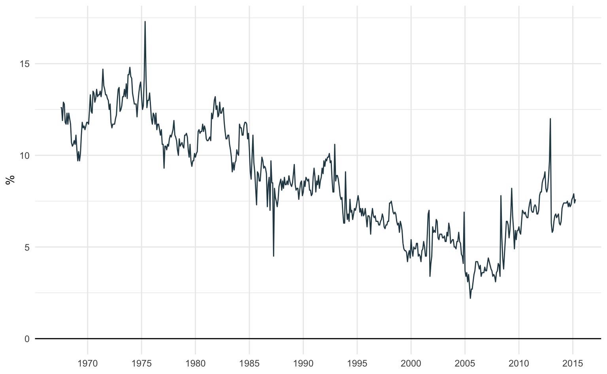

Gráfico de Linha
Gráficos de linha são frequentemente usados para representar séries de tempo, isto é, valores que mudam ao longo do tempo. Estes gráficos revelam a evolução de uma variável ao longo do tempo. O ggplot oferece alguma variedade de funções para este fim, mas a mais comum é a geom_line(). Este geom exige argumentos tanto para o eixo-x como para o eixo-y. Em geral, o eixo-x representa o tempo e o eixo-y o valor da variável de interesse.
Neste post vamos aprender a montar gráficos de linha usando o ggplot2 no R. Primeiro vamos fazer um exemplo simples para enxergar a dinâmica da taxa de poupança nos EUA. Depois, vamos entender como customizar o gráfico.
Além disso, vamos importar séries do Banco Central para fazer alguns exemplos aplicados usando o pacote GetBCBData.
R
Antes de iniciar precisamos carregar o pacote ggplot2, que traz as funções necessárias para montar os gráficos. Adicionalmente, vamos carregar o pacote GetBCBData, que utiliza a API do Sistema Gerador de Séries Temporais (SGS) do Banco Central do Brasil para baixar séries de tempo econômicas no R
Caso os pacotes não estejam instalados é preciso executar primeiro o código abaixo.
# Instala os pacotes necessários
install.packages(c("ggplot2", "GetBCBData"))Para carregar os pactoes utilizamos a função library.
# Carrega o pacote ggplot2
library(ggplot2)
# Carrega o pacote GetBCBData
library(GetBCBData)Além de servir como um repositório de funções, alguns pactoes também trazem bases de dados consigo. Neste exemplo vamos utilizar a base "economics" do pacote ggplot2.
data("economics")Para consultar as bases de dados disponíveis basta utilizar o comando data() sem nenhum argumento como no código abaixo
data()ggplot2
O pacote ggplot2 segue uma sintaxe bastante consistente, que permite “somar” elementos visuais sobre um mesmo gráfico. Isto permite que se crie uma infinidade de gráficos complexos a partir de elementos simples. Os elementos visuais são todos chamados por funções geom_*. Neste primeiro exemplo vamos focar na função geom_line() que desenha linhas. Estes elementos são todos somados de maneira intuitiva usando o sinal de soma +.
Essencialmente, temos os seguintes elementos principais:
- Dados - nossa tabela de dados.
- Função
aes()- que transforma os dados em objetos visuais. - Objeto geométrico (
geom) - que escolhe qual o formato destes objetos visuais.
Estes elementos são combinados numa sintaxe recorrente. A função ggplot tipicamente tem apenas dois elementos: data e aes. O argumento data indica o nome da base de dados. Já a função aes é a que indica como transformar os dados (as colunas da base de dados) em elementos visuais. Nos casos mais simples, esta função serve para indicar qual é o nome da variável x e qual é o nome da variável y.
Adicionamos uma função geom nesta chamada inicial como no exemplo abaixo.
ggplot(data = dados, aes(x = varivel_x, y = variavel_y)) +
geom_line()Gráfico de linha
Para construir um gráfico de linha precisamos, em geral, de apenas dois arguementos: um argumento x que é o nome da variável no eixo-x (comumemente, o tempo) e um argumento y que é o nome da variável no eixo-y (comumemente, a variável numérica).
Vamos utilizar a base economics que é carregada conjuntamente com o pacote ggplot2. Esta base traz a evolução de algumas variáveis econômicas ao longo do tempo.
# Carrega a base de dados (caso ainda não tenha feito)
data("economics")
# Visualiza as primeiras linhas da base de dados
head(economics)# A tibble: 6 × 6
date pce pop psavert uempmed unemploy
<date> <dbl> <dbl> <dbl> <dbl> <dbl>
1 1967-07-01 507. 198712 12.6 4.5 2944
2 1967-08-01 510. 198911 12.6 4.7 2945
3 1967-09-01 516. 199113 11.9 4.6 2958
4 1967-10-01 512. 199311 12.9 4.9 3143
5 1967-11-01 517. 199498 12.8 4.7 3066
6 1967-12-01 525. 199657 11.8 4.8 3018Note que a primeira coluna à esquerda (date) traz as datas. A coluna psavert é a taxa de poupança individual, mensurada em proporção à renda disponível. Podemos visualizar como se altera a taxa de poupança ao longo do tempo.
ggplot(data = economics, aes(x = date, y = psavert)) +
geom_line()Vamos quebrar o código acima em detalhes. Primeiro, usamos a função ggplot() para declarar que queremos fazer um gráfico. Colocamos os argumentos data e aes dentro desta função. O argumento data deve ser o nome da nossa base de dados: neste caso, data = economics.
O argumento aes é o que transforma as variáveis (as colunas da base de dados) em elementos visuais. Neste caso ele vai transformar o tempo e a taxa de poupança em algum elemento visual. Escolhemos aes(x = date, y = psavert).
Especificamos qual deve ser o elemento visual somando a função geom_line() no código inicial. Esta função indica que queremos um gráfico de linhas.
Unindo todas estes elementos temos um código enxuto que plota o gráfico. Vemos que a taxa de poupança nos EUA apresenta uma tendência de queda a partir da segunda metade dos anos 1970 que é revertida somente após a primeira metade dos anos 2000.
ggplot(
# Especifica o nome da base de dados
data = economics,
# Indica como devem ser mapeadas as variáveis nos eixos x e y
aes(x = date, y = psavert)
) +
# Especifica que queremos um gráfico de linha
geom_line()
Opções estéticas
Podemos customizar um gráfico de ggplot modificando os seus elementos estéticos. Um elemento estético pode assumir dois tipos de valor: constante ou variável. Um valor constante é um número ou texto, enquanto uma variável é uma coluna da nossa base de dados.
Há quatro opções estéticas básicas para gráficos de linha: color, alpha, linewidth e linetype.
color- Define a cor da linhaalpha- Define o nível de transparência da linhalinewidth- Define a espessura da linhalinetype- Define o tracejado da linha
Cores
Utilizamos o argumento color dentro da função geom_line para variar a cor da linha no gráfico. Pode-se escolher a cor da linha tanto por nome como por código hexadecimal. Por padrão, a função geom_line utiliza color = "black". No exemplo abaixo utilizo um tom de azul chamado "steelblue". Uma lista completa de cores (por nome) está disponível aqui.
# Gráfico de linha
ggplot(data = economics, aes(x = date, y = psavert)) +
# Altera a cor da linha
geom_line(color = "steelblue")Também é possível chamar as cores via código hexadecimal como no exemplo abaixo.
# Gráfico de linha
ggplot(data = economics, aes(x = date, y = psavert)) +
# Altera a cor da linha
geom_line(color = "#e76f51")Alpha
O argumento alpha controla o nível de transparência da cor e varia de 0 a 1, em que alpha = 0 é perfeitamente transparente e alpha = 1 é nada transparente. Por padrão, a função geom_line define que alpha = 1. Na prática, são raros os casos em que vale alterar este argumento. No exemplo abaixo definimos alpha = 0.5.
ggplot(data = economics, aes(x = date, y = psavert)) +
geom_line(alpha = 0.5)Espessura da linha
O argumento linewidth controla a espessura da linha. No exemplo abaixo defino linewidth = 1 dentro da função geom_line(). Na prática, não recomendo escolher um valor de linewidth acima de 1 pois a linha se torna muito espessa.
ggplot(data = economics, aes(x = date, y = psavert)) +
geom_line(linewidth = 1)O gráfico abaixo compara alguns tamanhos diferentes de espessura de linha. Note que é possível especificar valores não-inteiros como 0,5. Para evitar de repetir o mesmo código várias vezes, guardo a chamada inicial do ggplot em um objeto chamado p (de plot).
p <- ggplot(data = economics, aes(x = date, y = psavert))
# Espessura = 0.5
p + geom_line(linewidth = 0.5)
# Espessura = 1
p + geom_line(linewidth = 1)
# Espessura = 2
p + geom_line(linewith = 2)
# Espessura = 5
p + geom_line(linewidth = 5)Tracejado da linha
O argumento linetype controla o tracejado da linha. Por padrão, a função geom_line() utiliza linetype = 1, mas podemos escolher valores distintos. No exemplo abaixo usamos linetype = 2.
ggplot(data = economics, aes(x = date, y = psavert)) +
geom_line(linetype = 2)Abaixo pode-se ver a diferença entre cada uma delas.

Combinando elementos
Como foi aludido no início do post, parte da mágica do ggplot é de poder somar elementos ao mesmo gráfico. Isto permite uma grande flexibilidade na hora de montar nossas visualizações. Uma combinação bastante efetiva é juntar um gráfico de linha com um gráfico de pontos.
Primeiro, vamos importar a série do consumo de energia elétrica residencial no Brasil. Podemos importar séries de tempo do site do Banco Central do Brasil usando a função gbcbd_get_series do pacote GetBCBData.
Para importar uma série de tempo precisamos informar apenas: (1) o código da série pelo argumento id; e (2) a data de início da extração pelo argumento first.date (no formato YYYY-MM-DD).
# Import a série de consumo de energia elétrica residencial
consumo <- gbcbd_get_series(id = 1403, first.date = as.Date("2014-01-01"))O gráfico abaixo combina um geom_line() com um geom_point() para representar tanto os pontos de observação como a linha que une os pontos.
ggplot(data = consumo, aes(x = ref.date, y = value)) +
# Linha da série
geom_line() +
# Pontos sinalizando as observações
geom_point()Mapeando elementos estéticos
Cores
Como de costume, as características estéticas do gráfico podem refletir grupos de variáveis. No caso de gráficos de linha é comum querer representar séries de tempo distintas com cores diferentes.
Vamos importar três séries de tempo: o consumo de energia elétrica comercial (1402), residencial (1403) e industrial (1404). Todas as séries são mensais e são importadas a partir de janeiro de 2014.
# Importa as séries mensais do consumo de energia elétrica
series <- gbcbd_get_series(
id = c(1402, 1403, 1404),
first.date = as.Date("2014-01-01")
)Error in open.connection(con, "rb") :
cannot open the connection to 'https://api.bcb.gov.br/dados/serie/bcdata.sgs.1402/dados?formato=json&dataInicial=01/01/2020&dataFinal=01/01/2023'Os dados são automaticamente formatados no padrão longitudinal, em que cada linha representa uma observação no tempo de uma série em particular. Este é o formato ideal para trabalhar com visualizações em ggplot, onde os dados estão “empilhados”.
A coluna ref.date indica a data, a coluna series.name identifica o id da série e a coluna value representa o valor desta observação.
| ref.date | value | id.num | series.name |
|---|---|---|---|
| 2014-01-01 | 7745 | 1402 | id = 1402 |
| 2014-01-01 | 11798 | 1403 | id = 1403 |
| 2014-01-01 | 14563 | 1404 | id = 1404 |
| 2014-02-01 | 8204 | 1402 | id = 1402 |
| 2014-02-01 | 11879 | 1403 | id = 1403 |
| 2014-02-01 | 15130 | 1404 | id = 1404 |
Vamos mapear a coluna series.name nas cores das linhas. Para especificar isto utilizamos a função aes, que serve para transformar dados em elementos visuais. Da mesma forma como mapeamos a coluna ref.date e value numa linha, agora mapeamos series.name nas cores do gráfico.
ggplot(data = series, aes(x = ref.date, y = value)) +
geom_line(
# Indica que a variável series.name deve ser mapeada nas cores das linhas
aes(color = series.name)
)As escolhas de cores padrão nem sempre são satisfatórias. Para modificar as cores utilizamos a função scale_color_manual() que também nos dá controle sobre a legenda do gráfico.
ggplot(data = series, aes(x = ref.date, y = value)) +
geom_line(aes(color = series.name)) +
# Controla as cores e a legenda
scale_color_manual(
# Título da legenda (opcional)
name = "Consumo de energia",
# Nome das séries (opcional)
labels = c("Comercial", "Residencial", "Industrial"),
# Cores das linhas
values = c("#264653", "#e9c46a", "#e76f51"),
)Vale notar que existem vários pacotes e funções com cores pré-definidas que simplificam o processo manual de escolher as cores. O exemplo mais simples é o scale_color_brewer() que utiliza as paletas de cores do Color Brewer.
ggplot(data = series, aes(x = ref.date, y = value)) +
geom_line(aes(color = series.name)) +
# Controla as cores e a legenda
scale_color_brewer(
# Título da legenda (opcional)
name = "Consumo de energia",
# Nome das séries (opcional)
labels = c("Comercial", "Residencial", "Industrial"),
# Tipo ("qual" - qualitativo, "div" - divergente ou "seq" - sequencial)
type = "qual",
# Escolha da paleta
palette = 6
)Por padrão, a legenda das cores é colocada no lado direito do gráfico. Para modificar a sua posição usamos a função theme().
ggplot(data = series, aes(x = ref.date, y = value)) +
geom_line(aes(color = series.name)) +
scale_color_brewer(
name = "Consumo de energia",
labels = c("Comercial", "Residencial", "Industrial"),
type = "qual",
palette = 6
) +
theme(
# Define a posição da legenda (top, bottom, right ou left)
legend.position = "bottom"
)
Tipo de linha
Da mesma forma que modificamos a cor das linhas, podemos variar outros aspectos estéticos como, por exemplo, o tracejado da linha de cada série. Este tipo de modificação pode ser útil no caso de uma publicação que vai ser visualizada ou impressa em escala de cinza.
ggplot(data = series, aes(x = ref.date, y = value)) +
geom_line(
# Cada série é desenhada com um tracejado diferente
aes(linetype = series.name)
) +
# Controla a legenda das séries
scale_linetype_discrete(
# Título da legenda (opcional)
name = "Consumo de energia",
# Nome das séries (opcional)
labels = c("Comercial", "Residencial", "Industrial")
)Por fim, podemos modificar elementos estéticos de dois geoms no mesmo gráfico. No exemplo abaixo tanto o tracejado da linha como o formato do ponto variam segundo a série.
ggplot(data = series, aes(x = ref.date, y = value)) +
geom_line(aes(linetype = series.name)) +
geom_point(aes(shape = series.name)) +
# Controla a legenda das séries
scale_linetype_discrete(
# Título da legenda (opcional)
name = "Consumo de energia",
# Nome das séries (opcional)
labels = c("Comercial", "Residencial", "Industrial")
) +
scale_shape_discrete(
# Título da legenda (opcional)
name = "Consumo de energia",
# Nome das séries (opcional)
labels = c("Comercial", "Residencial", "Industrial")
)Renomeando os eixos do gráfico
É muito importante que um gráfico seja o mais auto-explicativo possível. Para isso precisamos inserir informações relevantes como título, subtítulo e fonte.
A função labs() permite facilmente renomear os eixos do gráfico. Os argumentos principais são os abaixo.
title- título do gráficosubtitle- subtítulo do gráficox- título do eixo-x (horizontal)y- título do eixo-y (vertical)caption- legenda abaixo do gráfico (em geral, a fonte)
No caso de gráficos de linha é muito comum omitir o nome do eixo-x, pois ele geralmente representa o tempo. Para omitir o nome de qualquer eixo basta defini-lo como NULL.
Novamente, utilizamos o sinal de soma para adicionar estes elementos ao gráfico.
ggplot(data = consumo, aes(x = ref.date, y = value)) +
# Linha da série
geom_line() +
# Define os elementos textuais do gráfico
labs(
title = "Aumento gradual na demanda por energia elétrica",
subtitle = "Consumo residencial de energia elétrica no Brasil.",
# Omite o título do eixo-x
x = NULL,
y = "GWh",
caption = "Fonte: Eletrobras."
)Começando o gráfico do zero
Os gráficos de linha gerados pelo ggplot2 não começam do zero no eixo-y. Isto pode ser um problema e, visualmente, criar a ilusão de que há mais volatilidade nos dados do que realmente existe.
Há muitas formas de forçar o gráfico a iniciar no zero. Uma das mais efetivas é incluir uma linha horizontal no eixo (\(y = 0\)). Pode-se desenhar esta linha horizontal com a função geom_hline() (onde o “hline” sinaliza “horizontal line”, linha horizontal).
ggplot(data = consumo, aes(x = ref.date, y = value)) +
# Linha horizontal y = 0
geom_hline(yintercept = 0) +
# Linha da série
geom_line()Outra forma de chegar no mesmo resultado é manipular o eixo-y para forçá-lo a iniciar no zero. No exemplo abaixo utilizamos a função scale_y_continuous(). Esta função controla todos os aspectos visuais da escala no eixo-y. O sufixo _continuous indica que a variável no eixo-y é contínua.
Para redefinir os limites do eixo-y variamos o argumento limits que aceita um par de valores. O primeiro valor é o limite inferior e o segundo valor é o limite superior. Por padrão ambos são definidos como NA.
ggplot(data = consumo, aes(x = ref.date, y = value)) +
# Linha da série
geom_line() +
# Manipular o eixo-y para inicar no zero
scale_y_continuous(limits = c(0, NA))Séries de tempo em degraus
Algumas séries de tempo variam de maneira “descontínua” no tempo. É o caso, por exemplo, da taxa SELIC, que é periodicamente definida como uma meta a ser perseguida pelo Banco Central. Neste caso, faz sentido ressaltar isto fazendo um gráfico que varia em “degraus”.
A função geom_step() faz este tipo de gráfico e possui os mesmos argumentos que a função geom_line(). O gráfico abaixo mostra a variação da taxa SELIC (meta) nos últimos anos.
# Importa a série diária da SELIC (meta) anualizada
selic <- gbcbd_get_series(id = 1178, first.date = as.Date("2016-01-01"))
ggplot(data = selic, aes(x = ref.date, y = value)) +
geom_step()Resumo
Neste post aprendemos o básico da estrutura sintática do ggplot e conseguimos montar gráficos de linha sofisticados usando poucas linhas de código. Em qualquer gráfico temos três elementos básicos
- Dados - nossa tabela de dados.
- Função
aes()- que transforma os dados em objetos visuais. - Objeto geométrico (
geom) - que escolhe qual o formato destes objetos visuais.
Alguns pontos de destaque:
- Utilize cores diferentes para séries distintas usando
aes(color = ...). - Combine elementos como linhas e pontos somando os “geoms”.
- Comece o gráfico no zero utilizando ou
geom_hline(yintercept = 0)ouscale_y_continuous(limits=c(0,NA)).
Seguindo esta lógica e somando os objetos podemos criar belos gráficos.
# Importa as séries mensais do consumo de energia elétrica
series <- gbcbd_get_series(
id = c(1402, 1403, 1404),
first.date = as.Date("2019-01-01")
)
ggplot(data = series, aes(x = ref.date, y = value)) +
geom_hline(yintercept = 0) +
geom_line(
aes(color = series.name),
linewidth = 1
) +
geom_point(
aes(color = series.name),
size = 2
) +
scale_color_manual(
name = "Consumo de Energia",
labels = c("Comercial", "Residencial", "Industrial"),
values = c("#264653", "#e9c46a", "#e76f51")
) +
labs(
title = "Recuperação do consumo de energia pós-pandemia",
subtitle = "Consumo mensal de energia elétrica segundo a finalidade.",
x = NULL,
y = "(GWh)",
caption = "Fonte: Eletrobras."
) +
theme(
legend.position = "bottom"
)